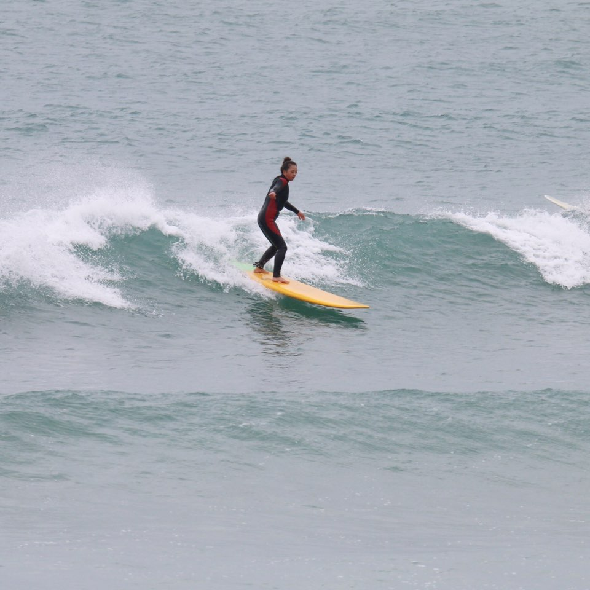

도전목표: 사람 많고 큰 파도에서 라이딩하기

insta @surfholic.co.kr #서프홀릭
일단 누운 파도라서 말리지 않으니까 두렵지 않았음
날이 안서서 세트 아닌거는 많이 놓치긴 했지만
내가 파도 놓치는 걸 목격한 사람들은 왜 패들하다 멈추냐는 게 공통적인 피드백
사이드는 파도 같이 타는 사람이 있었기 때문에 시도도 못했지만 직진으로 세개 탔음!
하나는 드랍에 보드날리기도 하긴 했지만..
한 시간 반 진짜 알차고 재밌게 탄거같음
내일 새벽은 사이드 째는 거 진짜 해본다..